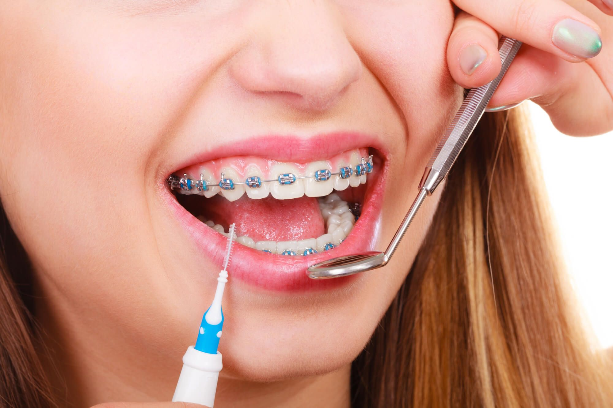
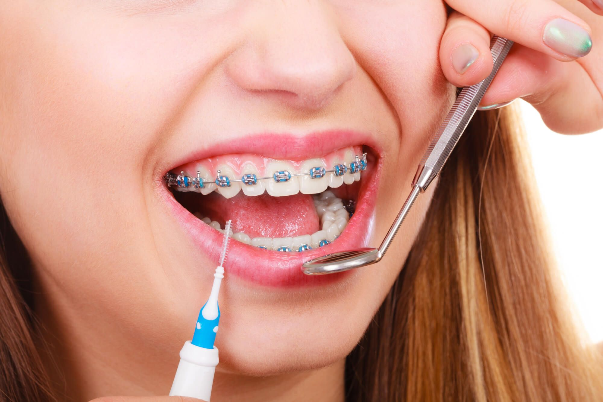

Our Services
At 100SMILES Dental Care, we understand the diverse needs of our clients, and that's why we offer a comprehensive range of dental services. From routine wellness check-ups and cleanings to dental implants, orthodontics, and cosmetic dentistry, we provide a full spectrum of preventive and restorative care to keep your smile healthy and beautiful.

 



- Routine wellness check-ups and cleanings
- Dental implants
- Orthodontics
- Cosmetic dentistry
- Diagnostics and treatments
- Dental surgeries
- Root canal treatment
- Emergency care
- Patient education and nutritional guidance
- Oral hygiene tips
Our experienced dentists are well-equipped to handle common dental issues, offering diagnostics, treatments, and surgeries when necessary. Additionally, we prioritize patient education, ensuring you have the knowledge and resources to make informed decisions about your dental health. Whether it's nutritional guidance, oral hygiene tips, root canal treatment or emergency care, 100SMILES Dental Care is dedicated to providing services that nurture the health and happiness of our clients.
At 100SMILES Dental Care, our promise is to deliver the highest standard of care for our patients, regardless of their age or dental needs. Our dedicated team of dentists and support staff shares a profound commitment to dental health, ensuring that our patients receive the attention and treatment they deserve.
Annual Dental Check-Up Package*
Our Annual Dental Check-Up package includes the following comprehensive services:
- Physical Examination: A thorough examination of your overall dental health, including checking for any signs of illness, abnormalities, or discomfort.
- Cleanings: Ensuring that your teeth are clean and free from plaque and tartar.
- X-Rays: Assessment and preventive measures against common dental issues.
- Dental Check-Up: Evaluation of your dental health, including checking for signs of dental disease and providing advice on dental care.
- Nutritional Guidance: Discussion about your diet, nutritional needs, and recommendations for maintaining a healthy smile.
- Blood Tests or Laboratory Work (if necessary): Additional diagnostic tests may be recommended based on your age, dental history, or specific health concerns.
*Enjoy a 10% discount on your Annual Dental Check-Up until March 31st!
Articles That Might Interest You
- The Importance of Regular Dental Check-Ups
- Tips for Maintaining Oral Hygiene
- Understanding Dental Implants
- How to Choose the Right Toothbrush